Нашите Топ 10 Албуми
-
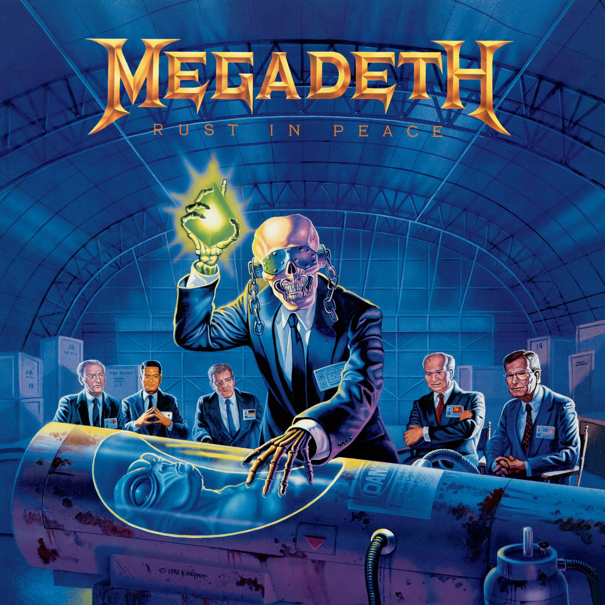
Megadeth – Rust in Peace
Албумът, който утвърждава Megadeth като върховни майстори на траш метъла с изключителни китарни сола.
-

Metallica – Master of Puppets
Класически траш метъл шедьовър, който дефинира жанра и остава еталон за всички бъдещи метъл банди.
-

Opeth – Blackwater Park
Прогресивен метъл шедьовър, който комбинира меланхолия, тежест и изключителна динамика.
-

Gojira – From Mars to Sirius
Албумът утвърждава Gojira като водеща френска метъл група с екологично и философско послание, съчетано с тежки рифове и прогресивни елементи.
-

Mastodon – Leviathan
Прогресив/слъдж метъл албум вдъхновен от Моби Дик. Leviathan впечатлява с комплексни композиции и мощни рифове.
-
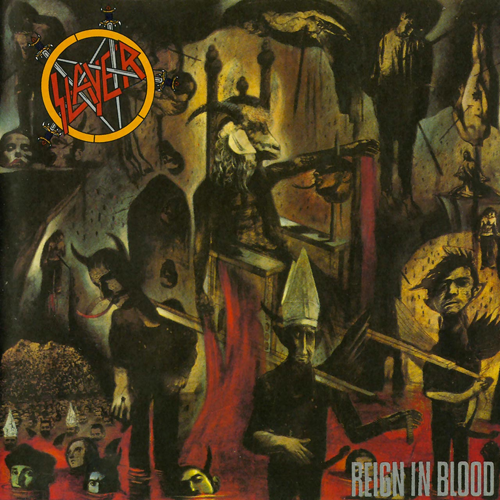
Slayer – Reign in Blood
Интензивен траш метъл класик, който впечатлява с бързина, агресия и техническа прецизност.
-

Exodus – Fabulous Disaster
Класически траш метъл албум, който демонстрира скорост, агресия и виртуозност, поставяйки Exodus сред пионерите на жанра.
-

Dream Theater – Metropolis Pt. 2: Scenes from a Memory
Концептуален шедьовър на прогресивния метъл, който комбинира сложни композиции с дълбока емоционална история.
-
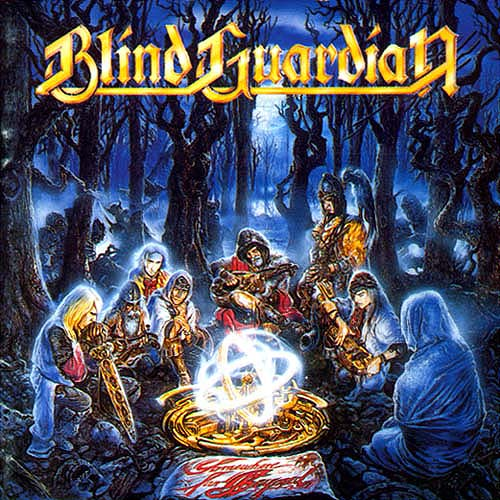
Blind Guardian – Somewhere Far Beyond
Албумът от 1992 г., но все още ценен класически материал, съчетава епичен пауър метъл с богати вокални хармонии и фентъзи текстове, изграждайки атмосфера за истинските фенове на жанра.
-

Amon Amarth – Twilight of the Thunder God
Викинг метъл албум, който съчетава агресивни рифове и мощни мелодии с епични текстове, вдъхновени от нордическата митология.
Нашите 10 Албума на 2025
-
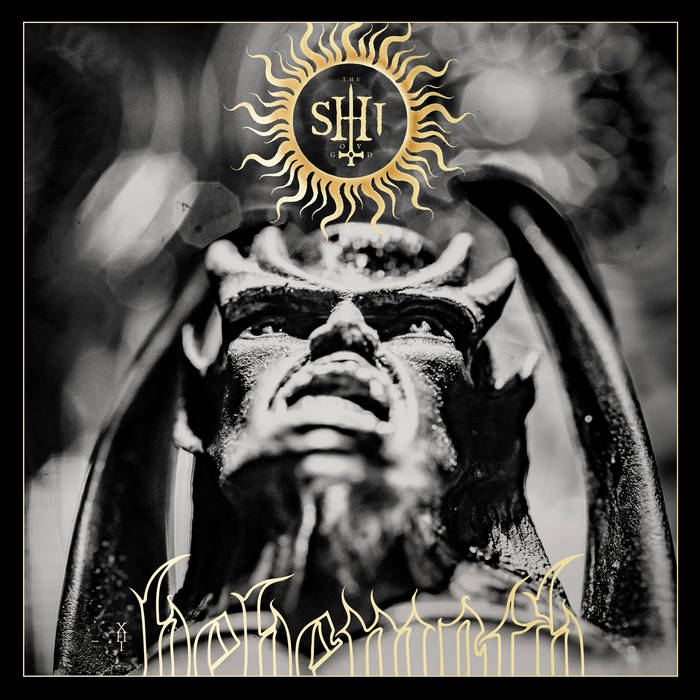
Behemoth – The Shit Ov God
Блек/дет метъл шедьовър, който поддържа тъмния и агресивен стил на групата.
-
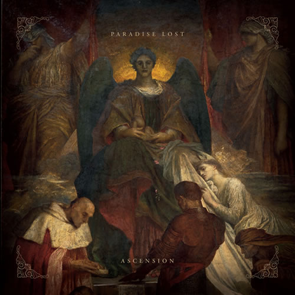
Paradise Lost – Ascension
Меланхоличен дуум метъл с класическо звучене и модерни аранжименти.
-
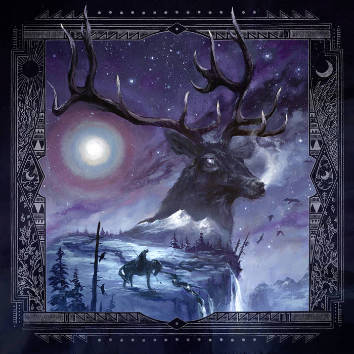
Blackbraid – Blackbraid III
Blackbraid III продължава да разширява границите на блэк метъла с атмосферни и епични композиции, които съчетават сурова агресия с меланхолична мелодика.
-
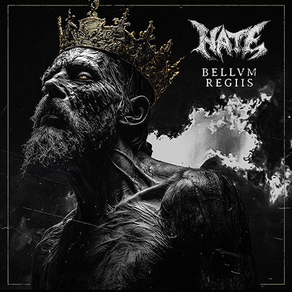
Hate – Bellum Regiis
Тежък дет метъл албум с войнствена атмосфера и брутални рифове.
-
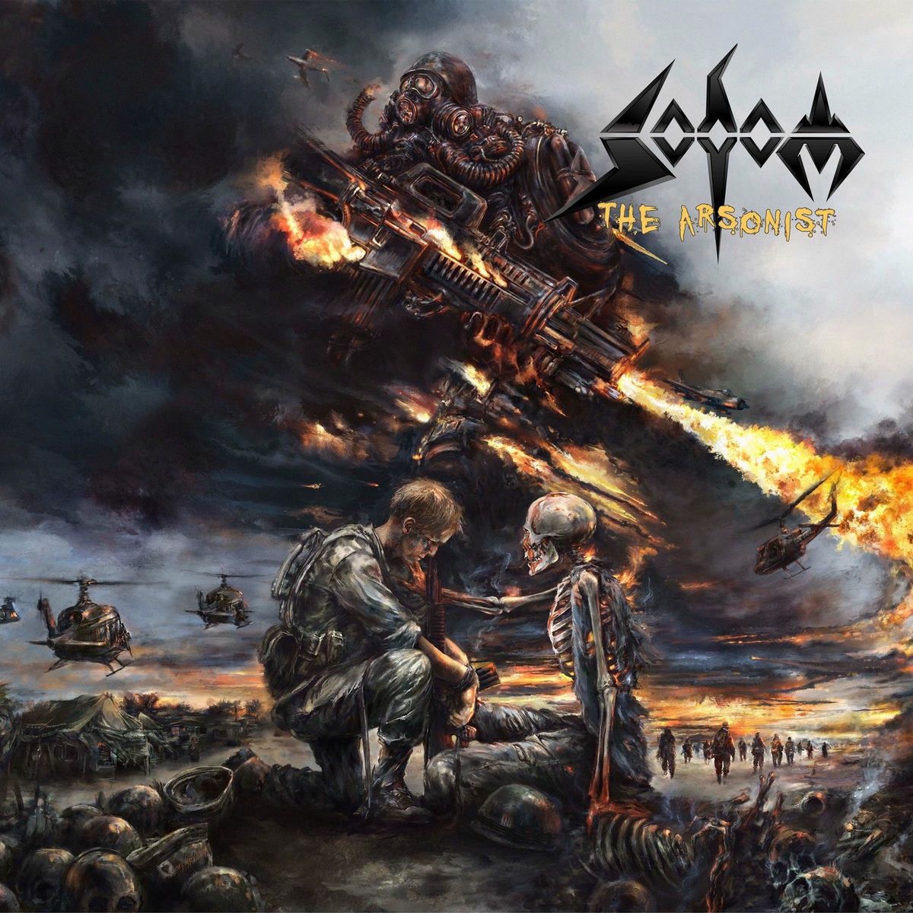
Sodom – The Arsonist
Класически траш метъл със скоростни и агресивни композиции.
-
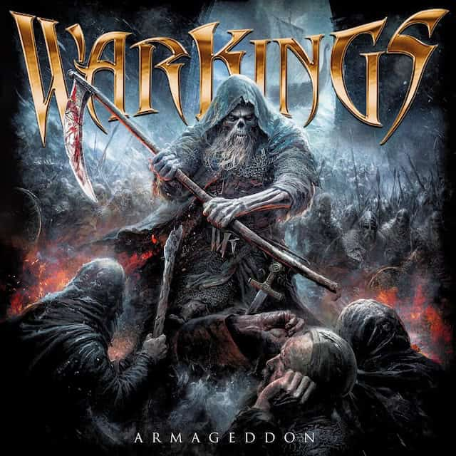
Warkings – Armageddon
Енергичен и епичен метъл албум, който подчертава военната тематика на групата.
-
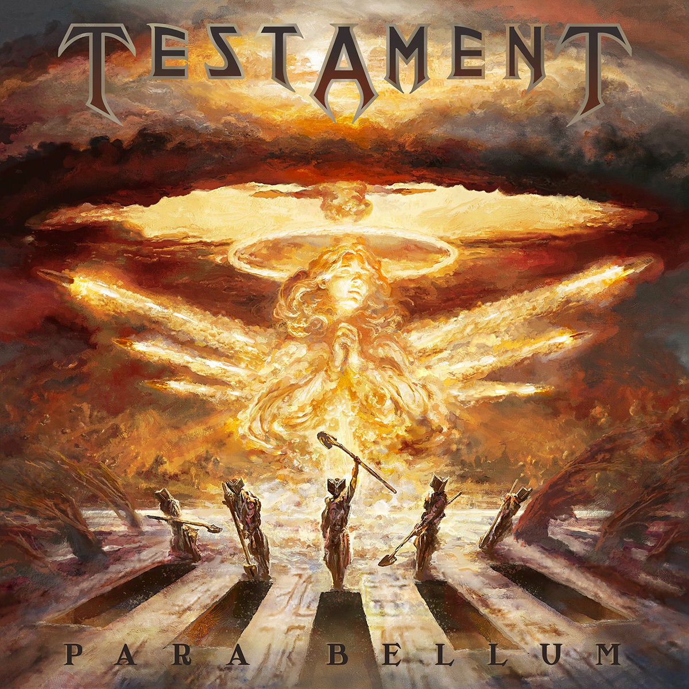
Testament – Para Bellum
Траш метъл с изключителни китарни сола и агресивна ритъм секция.
-
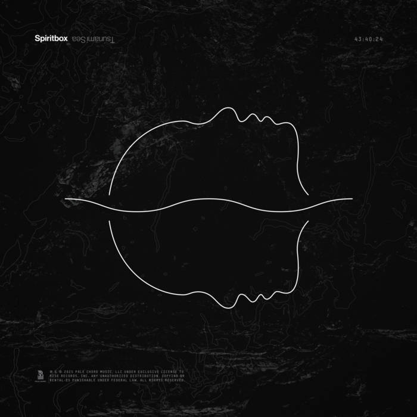
Spiritbox – Tsunami Sea
Модерен метъл с прогресивни и атмосферни елементи, подчертаващи вокалните способности на групата.
-
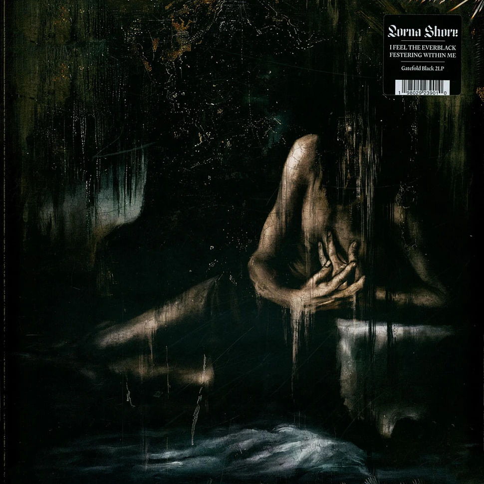
Lorna Shore – I Feel The…
Брутален деткор албум с вокални екстреми и епични композиции.
-
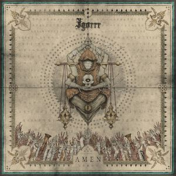
Igorrr – Amen
Igorrr представя еклектичен албум, комбиниращ блэк метъл, барокова музика и електронни елементи, създавайки хаотичен, но впечатляващ звуков пейзаж.